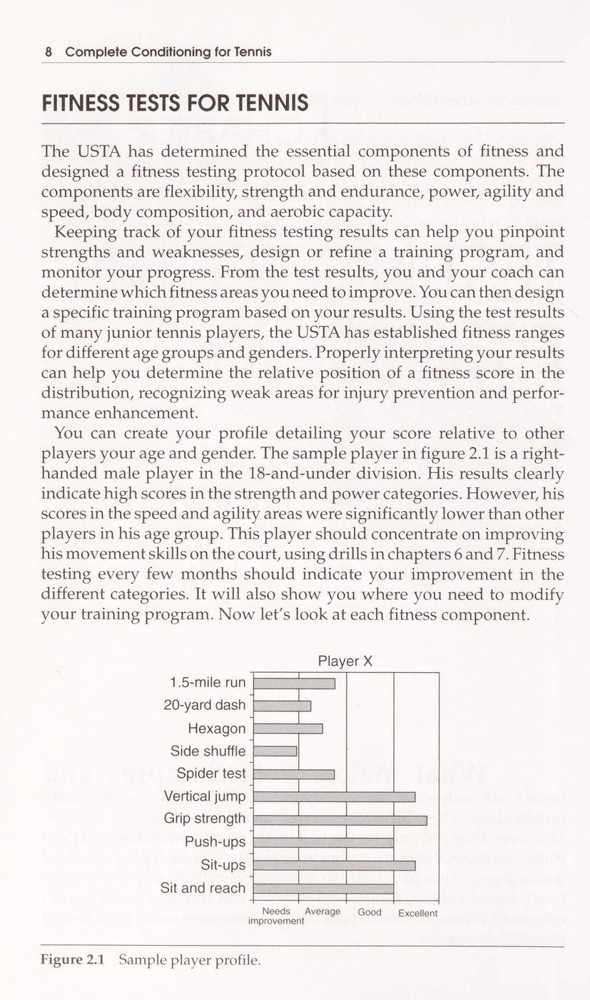
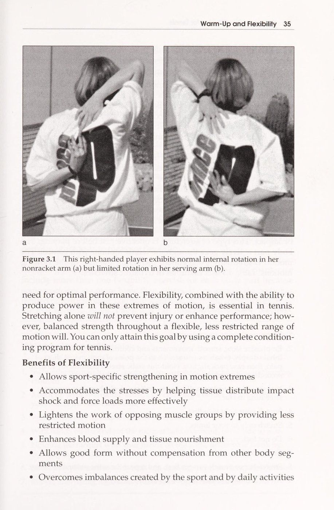
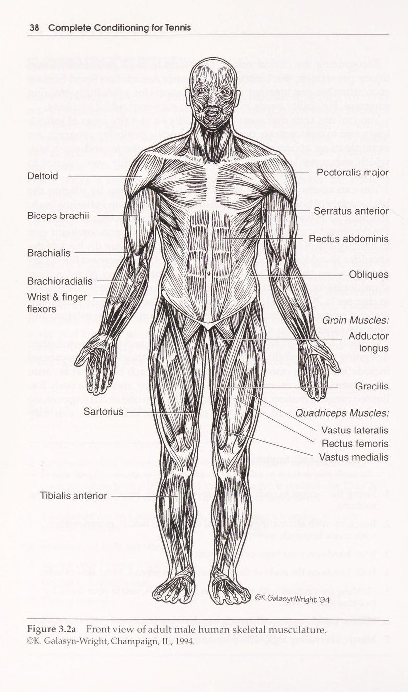
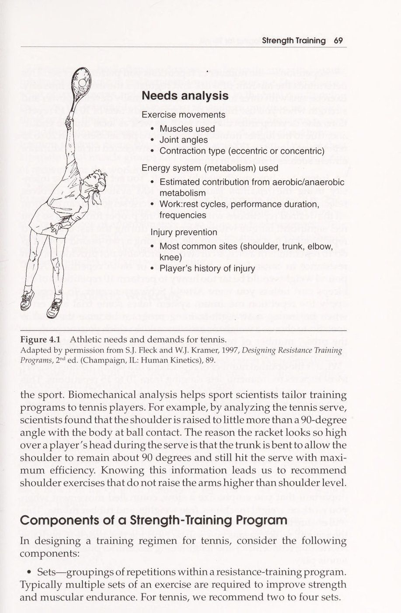
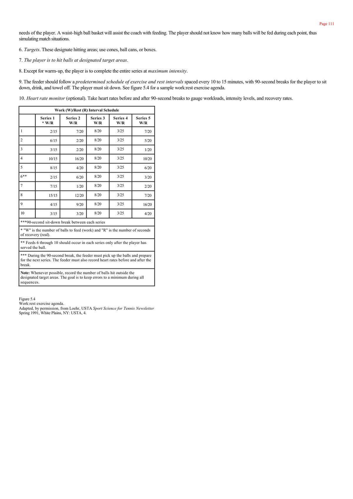
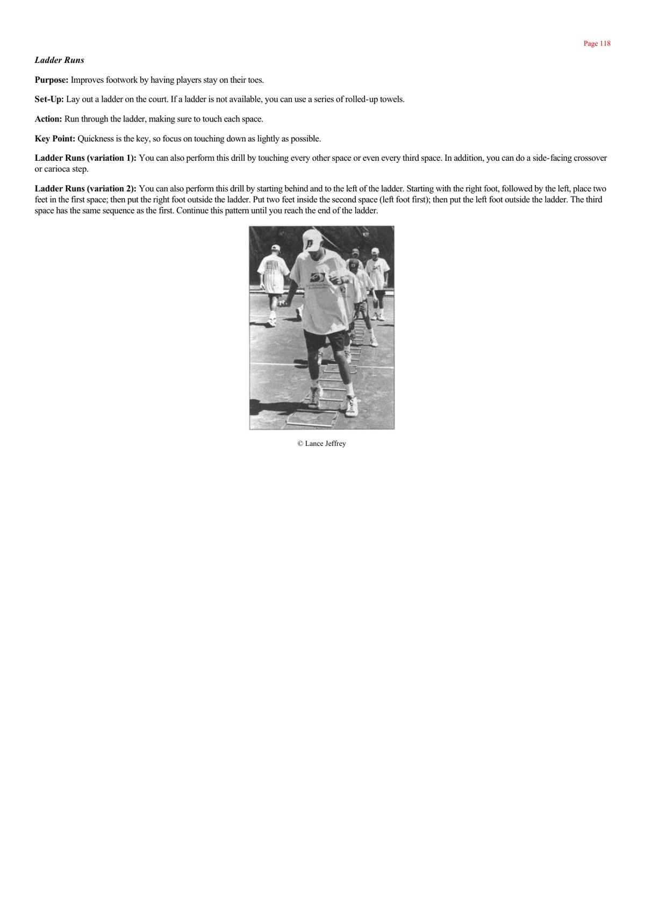
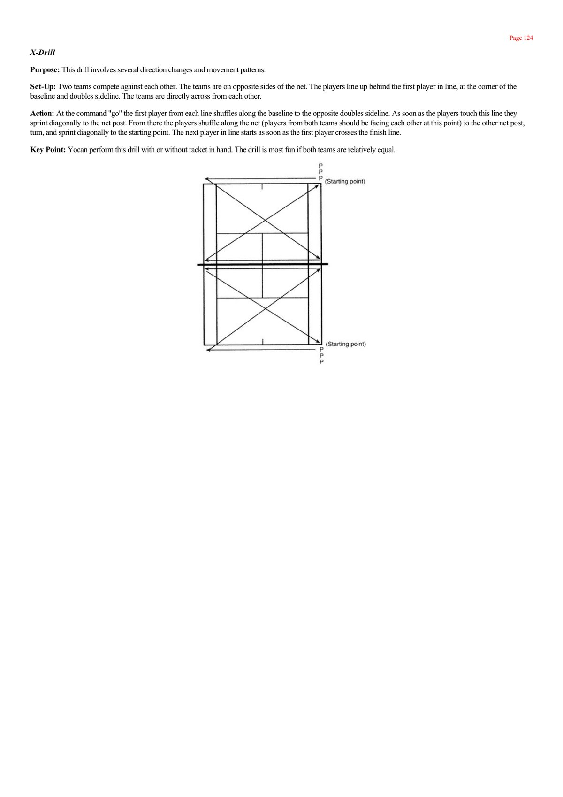
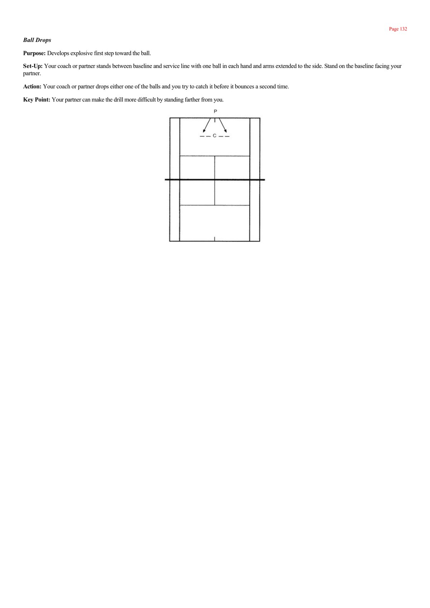
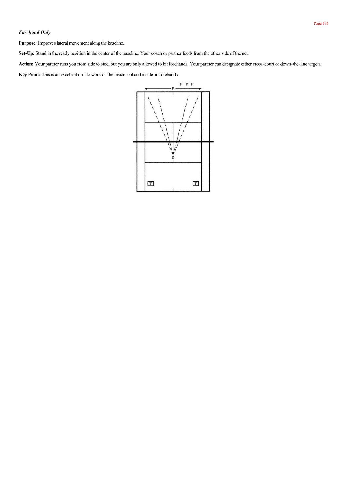
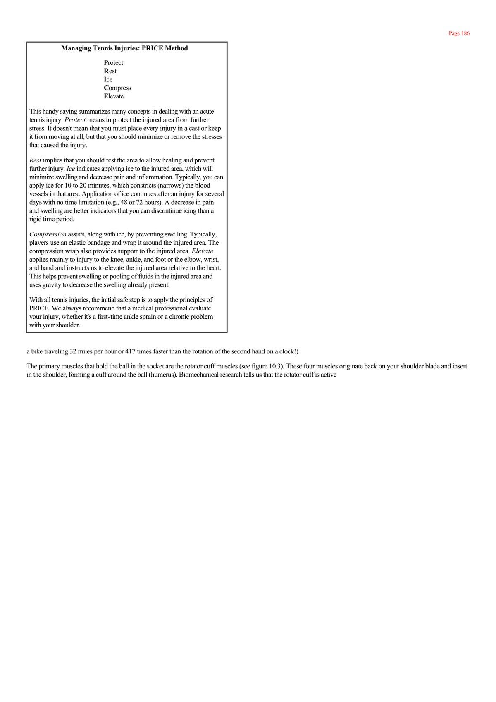

Thể Lực Toàn Diện Trong Quần Vợt (Complete Conditioning for Tennis)
Bản dịch Việt ngữ này chỉ dùng cho mục đích học tập cá nhân, phi thương mại. Bản quyền tác phẩm gốc thuộc về tác giả và nhà xuất bản.
Mục Lục Sách
- Lời Tựa Của Tom Gullikson
- Lời Mở Đầu Tác Giả
- PHẦN 1: ĐÁNH GIÁ & KHỞI ĐỘNG
- Chương 1: Nhu Cầu Thể Chất
- Chương 2: 17 Bài Kiểm Tra Thể Lực
- Chương 3: Khởi Động & Giãn Cơ
- PHẦN 2: SỨC MẠNH & SỨC BỀN
- Chương 4: Huấn Luyện Sức Mạnh
- Chương 5: Sức Bền Tim Mạch
- PHẦN 3: TỐC ĐỘ & BÀI TẬP SÂN
- Chương 6: 12 Bài Tập Nhanh Nhẹn
- Chương 7: 18 Bài Tập Bóng & Vợt
- Chương 8: Thiết Kế Chương Trình
- PHẦN 4: GIÁO ÁN & AN TOÀN
- Chương 9: Giáo Án Mùa Giải
- Chương 10: Phòng Tránh Chấn Thương

Jim Courier trượt trên sân đất nện - Biểu tượng của thể lực phi thường và ý chí chiến đấu sắt đá
Lời Tựa Của Tom Gullikson
Các tay vợt quần vợt ngày nay cao lớn hơn, nhanh hơn và mạnh mẽ hơn bao giờ hết. Công nghệ sản xuất vợt hiện đại cho phép người chơi đánh quả bóng với những vận tốc từng bị coi là không tưởng; những cú giao bóng trên hệ thống giải chuyên nghiệp nam ATP Tour hiện nay thường xuyên vượt qua cột mốc 225 km/h (140 mph). Những thách thức về thể chất đặt ra trước mắt các vận động viên quần vợt chưa bao giờ khắc nghiệt đến như vậy.
Vào những năm 1950 và 1960 khi tôi và người anh em sinh đôi Tim lớn lên ở Wisconsin, quần vợt đơn giản hơn nhiều. Chúng tôi chơi quần vợt theo mùa xen kẽ với bóng bầu dục, bóng rổ và bóng chày mà không hề tuân theo bất kỳ một chương trình huấn luyện thể lực chuyên biệt nào. Nhưng thời kỳ ngây thơ đó đã vĩnh viễn lùi vào dĩ vãng. Trong kỷ nguyên hiện đại, nếu bạn không sở hữu một nền tảng thể lực siêu đẳng, bạn sẽ không có bất kỳ cơ hội nào để tồn tại ở đẳng cấp thi đấu đỉnh cao.
Tiến sĩ Paul Roetert và Chuyên gia vật lý trị liệu Todd Ellenbecker là hai bộ óc khoa học thể thao hàng đầu của USTA. Họ đã đúc kết tất cả các công trình nghiên cứu hiện đại nhất về sinh lý học vận động và phòng ngừa chấn thương vào cuốn sách này. Đây là cẩm nang thể lực hoàn hảo nhất thế giới dành cho mọi vận động viên và huấn luyện viên quần vợt.
Lời Mở Đầu Của Các Tác Giả
Quần vợt thường được các nhà khoa học vận động mô tả như một chuỗi liên tục của các tình huống khẩn cấp trên sân đấu: Bứt tốc nước rút 3 mét, phanh gấp đổi hướng, nhoài người cứu bóng, vươn thẳng cánh tay lên không trung để đón cú lốp bóng, và bật nhảy đập bóng với toàn bộ sức mạnh cơ bắp. Sau đó, vận động viên chỉ có 20 giây để hạ nhịp tim trước khi bước vào một tình huống khẩn cấp tiếp theo.
Mục tiêu của cuốn sách "Thể Lực Toàn Diện Trong Quần Vợt" (Complete Conditioning for Tennis) là cung cấp cho bạn một lộ trình rèn luyện thể lực chức năng chuyên biệt (Sport-specific functional conditioning). Chúng tôi không chỉ dạy bạn cách nâng tạ hay chạy bộ đơn thuần, mà hướng dẫn bạn cách xây dựng Chuỗi động học liên hoàn học (Kinetic Chain), tối ưu hóa tính linh hoạt của khớp vai, gia tăng tốc độ phản xạ và xây dựng sức chịu đựng bền bỉ để bạn có thể chiến đấu dũng mãnh tới điểm số cuối cùng của set đấu thứ năm.
Chương 1: Nhu Cầu Thể Chất Của Quần Vợt Hiện Đại
Thể Thao Đa Dạng Thể Hình: Từ Todd Martin Đến Michael Chang
Todd Martin cao 1m96 và Michael Chang chỉ cao 1m70. Cả hai đều là những tay vợt hàng đầu thế giới từng lọt vào các trận chung kết Grand Slam danh giá. Đây chính là nét đẹp độc đáo và lợi thế tuyệt vời của môn quần vợt so với các môn thể thao khác: Những vận động viên với chiều cao và cấu trúc thể hình hoàn toàn khác biệt đều có thể bước lên bục vinh quang nếu biết phát huy tối đa vũ khí của mình.
Todd Martin tận dụng sải tay khổng lồ để tung ra những quả giao bóng sấm sét và chiếm lĩnh lưới; trong khi Michael Chang sử dụng tốc độ di chuyển phi thường và sự bền bỉ của một cỗ máy cuối sân để chặn đứng mọi đường bóng. Tuy nhiên, điểm chung lớn nhất giữa họ chính là thói quen rèn luyện thể lực nghiêm ngặt và một nền tảng thể chất hoàn hảo. Dù bạn sở hữu thể hình như thế nào, thể lực chuyên biệt chính là bệ phóng quyết định đẳng cấp của bạn.
Đặc Trưng Năng Lượng: Cuộc Hôn Phối Giữa Hiếu Khí Và Yếm Khí
Một trận đấu quần vợt trung bình kéo dài từ 1.5 đến hơn 3 giờ đồng hồ, bao gồm hàng trăm pha bóng bùng nổ ngắn ngủi (mỗi pha bóng kéo dài từ 4 đến 10 giây).
Về mặt chuyển hóa năng lượng sinh học, quần vợt đòi hỏi sự kết hợp phức tạp: - Hệ thống năng lượng yếm khí Phosphagen (ATP-CP) và Glycolytic: Cung cấp năng lượng bùng nổ tức thì cho các cú vung vợt với vận tốc đầu vợt cực đại và những pha bứt tốc xuất phát chớp nhoáng. - Hệ thống năng lượng hiếu khí (Aerobic System): Đóng vai trò như một cỗ máy lọc và tái tạo, giúp nhanh chóng thanh lọc axit lactic trong cơ bắp và hạ nhịp tim trong khoảng thời gian nghỉ 20 giây giữa các điểm số và 90 giây đổi sân. Nếu không có hệ thống hiếu khí vững vàng, hệ thống yếm khí của bạn sẽ cạn kiệt chỉ sau hai set đấu đầu tiên.
Sáu Trụ Cột Của Thể Lực Quần Vợt Toàn Diện
Một chương trình huấn luyện thể lực hoàn chỉnh của USTA được xây dựng dựa trên sáu phẩm chất cốt tử: 1. Độ linh hoạt và biên độ vận động khớp (Flexibility & Joint Mobility). 2. Sức mạnh cơ bắp và sức mạnh bùng nổ (Strength & Power). 3. Sức bền hiếu khí và yếm khí (Aerobic & Anaerobic Endurance). 4. Tốc độ và gia tốc bứt phá (Speed & Acceleration). 5. Sự nhanh nhẹn và thăng bằng động (Agility & Dynamic Balance). 6. Sự phối hợp thần kinh cơ và cảm giác bóng (Neuromuscular Coordination).
Chương 2: Hệ Thống 17 Bài Kiểm Tra Thể Lực Quần Vợt
Tầm Quan Trọng Của Việc Đánh Giá Định Kỳ (Fitness Profiling)
Bạn không thể cải thiện những gì bạn không thể đo lường. Trước khi bắt đầu một giáo án tập luyện thể lực, mỗi vận động viên cần trải qua một đợt kiểm tra thể lực toàn diện để xác định rõ điểm mạnh, điểm yếu và nguy cơ mất cân bằng cơ bắp (Muscle imbalances).
USTA đã phát triển hệ thống 17 bài kiểm tra thể chất chuẩn hóa dành riêng cho bộ môn quần vợt. Các bài kiểm tra này được thiết kế để mô phỏng chính xác các chuyển động đặc thù trên sân, giúp huấn luyện viên xây dựng "Hồ Sơ Thể Lực Vận Động Viên" (Player Fitness Profile) nhằm cá nhân hóa chương trình tập luyện.

Các Bài Kiểm Tra Độ Linh Hoạt Và Sức Mạnh Cơ Lực
Hệ thống đo lường các chỉ số vận động bao gồm: - Kiểm tra độ linh hoạt gân kheo (Sit and Reach Test): Đo lường độ giãn của gân kheo và cột sống thắt lưng (Bảng 2.1). - Kiểm tra góc xoay khớp vai (Shoulder Internal/External Rotation): Đánh giá biên độ xoay của khớp vai tay thuận để phòng ngừa hội chứng chóp xoay (Bảng 2.3). - Kiểm tra sức bền cơ bụng (1-Minute Sit-Ups): Đo lường sức mạnh của cơ cốt lõi vùng bụng (Bảng 2.4). - Kiểm tra sức mạnh thân trên (1-Minute Push-Ups): Đo lường sức bền của cơ ngực, cơ delta và cơ tam đầu tay sau (Bảng 2.5). - Kiểm tra lực nắm bàn tay (Grip Strength Dynamometer): Đo lường sức mạnh của các nhóm cơ cẳng tay (Bảng 2.6).
Các Bài Kiểm Tra Nhanh Nhẹn, Sức Bật Và Bền Bỉ Đặc Thù
Các bài kiểm tra thực địa trên sân quần vợt: - Bài kiểm tra Lục giác (Hexagon Agility Test): Vận động viên nhảy liên tục vào và ra khỏi 6 cạnh của một hình lục giác vẽ trên sân để đo lường sự phối hợp của đôi chân và khả năng đổi hướng nhanh (Bảng 2.12). - Bài kiểm tra Chạy nhện (Spider Run Test): Người chơi xuất phát từ điểm giữa vạch baseline, lần lượt bứt tốc nhặt 5 quả bóng đặt tại các góc sân và vạch chữ T mang về vạch xuất phát. Đây là bài kiểm tra tiêu chuẩn vàng đo lường độ nhanh nhẹn đặc thù của quần vợt (Bảng 2.14). - Ném bóng tạ thuận tay và trái tay (Medicine Ball Toss): Ném bóng tạ 2 kg theo tư thế đánh bóng thuận tay và trái tay để đo lường công suất phát lực xoay hông (Bảng 2.8 và 2.9). - Chạy bền 1.5 dặm (1.5-Mile Run): Đánh giá công suất hấp thụ oxy tối đa (VO2 max) và nền tảng tim mạch (Bảng 2.17).
Chương 3: Khởi Động & 21 Bài Tập Giãn Cơ Chuyên Sâu
Triết Lý Giãn Cơ Hiện Đại Của Huyền Thoại John McEnroe
Huyền thoại John McEnroe từng chia sẻ: "Giãn cơ là chiếc chìa khóa vàng giúp tôi không bị chấn thương và di chuyển thanh thoát hơn trên sân đấu". Trong giai đoạn đầu sự nghiệp, McEnroe từng liên tục bị hành hạ bởi những chấn thương gân kheo, cơ háng và đau lưng dưới. Khi tuổi tác tăng lên, ông nhận ra rằng độ dẻo dai chính là bí quyết giúp cơ bắp chịu đựng được cường độ thi đấu khốc liệt.
Một quy trình khởi động đúng chuẩn không phải là việc đứng yên một chỗ kéo căng cơ bắp một cách thụ động. USTA khuyến cáo quy trình chuẩn mực gồm hai giai đoạn: Khởi động động (Dynamic warm-up) trước khi thi đấu để làm ấm các mô cơ, và giãn cơ tĩnh (Static stretching) sau buổi tập để phục hồi chiều dài sợi cơ.


Quy Trình Khởi Động Động 4 Bước Trước Trận Đấu
Trước khi chạm vào cây vợt, vận động viên phải dành ít nhất 10 đến 15 phút thực hiện khởi động động: 1. Nâng cao nhiệt độ cơ thể: 3 đến 5 phút chạy bộ nhẹ nhàng kết hợp bước trượt ngang (side shuffles), Bước chân bắt chéo (crossover step) (carioca) và chạy nâng cao đùi. 2. Kích hoạt khớp vận động: Xoay tròn khớp vai, xoay hông, bước chùng chân xoay thân trên (walking lunges with trunk rotation). 3. Động tác chân đặc thù: Bước nhún tách chân chuẩn bị nhịp (split-steps), bước phanh giảm tốc (deceleration footwork) và bật nhảy nhịp nhàng. 4. Đánh bóng làm quen cự ly ngắn (Mini-tennis): Bắt đầu đánh bóng nhẹ nhàng từ ô giao bóng để đánh thức cảm giác mắt và phản xạ cổ tay trước khi lùi về vạch cuối sân.
Hệ Thống 21 Bài Tập Giãn Cơ Phục Hồi Chuyên Biệt
Sau mỗi buổi tập hoặc trận đấu căng thẳng, vận động viên cần thực hiện giãn cơ tĩnh (giữ mỗi động tác từ 20 đến 30 giây, lặp lại 2 đến 3 lần, thở đều không nín thở): - Giãn cơ chóp xoay vai (Posterior Capsule & Sleeper Stretch): Kéo cánh tay vắt ngang ngực hoặc nằm nghiêng xoay trong cẳng tay để giải tỏa căng thẳng cho bao khớp sau vai. - Giãn cơ gập và duỗi cổ tay (Wrist Flexor & Extensor Stretch): Duỗi thẳng cánh tay ra phía trước, dùng tay kia kéo nhẹ các ngón tay gập xuống dưới và bẻ ngược lên trên. - Giãn gân kheo và cơ mông (Hamstring & Gluteal Stretches): Nằm ngửa dùng dây kéo chân thẳng lên cao để kéo giãn toàn bộ chuỗi cơ phía sau đùi. - Giãn cơ gập hông và cơ tứ đầu đùi (Hip Flexor & Quad Stretch): Quỳ một chân xuống sàn, đẩy nhẹ hông về phía trước để mở rộng khớp háng.
Chương 4: Huấn Luyện Sức Mạnh & Phát Lực Quần Vợt

Cơ Sinh Học Hệ Cơ Bắp Trong Các Cú Đánh Quần Vợt
Sức mạnh cơ bắp trong quần vợt không đo bằng khối lượng tạ tối đa bạn có thể đẩy nằm (Bench Press), mà đo bằng khả năng phát lực bùng nổ theo chuỗi động học khép kín và khả năng giảm tốc bảo vệ khớp.
Mỗi cú đánh đòi hỏi sự tham gia của các nhóm cơ đặc thù: - Cú giao bóng (Serve): Cơ chân và mông nạp lực đẩy cơ thể lên không trung; cơ bụng và cơ liên sườn gập thân người xoay vặn mạnh mẽ; cơ ngực lớn, cơ delta trước và cơ dưới vai (subscapularis) xoay úp cánh tay (pronation); trong khi các nhóm cơ chóp xoay phía sau (infraspinatus, teres minor) và cơ lưng trên phải co cơ ly tâm (eccentric contraction) dữ dội để phanh hãm cánh tay lại sau khi tiếp xúc bóng. - Cú thuận tay (Forehand): Cơ tứ đầu đùi và cơ mông truyền lực xoay hông; cơ chéo bụng và cơ ngực kéo vợt tăng tốc về phía trước; cơ cẳng tay khóa chặt cổ tay vững chãi tại điểm tiếp xúc. - Cú trái tay hai tay (Two-handed Backhand): Cánh tay không thuận đóng vai trò phát lực đẩy chính, trong khi cơ lưng trên và cơ delta sau của tay thuận co rút để mở rộng lồng ngực.
Nguyên Tắc Cân Bằng Cơ Bắp Và Phòng Ngừa Quá Tải
Quần vợt là một môn thể thao bất đối xứng (asymmetrical sport): Người chơi luôn vung vợt bằng một tay thuận với hàng ngàn lần lặp lại mỗi tuần. Điều này tạo ra sự mất cân bằng cơ bắp nghiêm trọng: Nhóm cơ xoay trong vai và cơ ngực thường quá khỏe và co ngắn, trong khi nhóm cơ xoay ngoài vai và cơ cố định xương bả vai (scapular stabilizers) lại quá yếu và bị kéo giãn quá mức.
Hậu quả là xương bả vai bị kéo lệch về phía trước, gây chèn ép gân chóp xoay và dẫn đến đau vai mãn tính. Do đó, một giáo án huấn luyện sức mạnh thông minh của USTA luôn tuân theo tỷ lệ vàng 2:1 hoặc 3:1: Với mỗi bài tập đẩy ngực về phía trước, vận động viên phải thực hiện ít nhất hai đến ba bài tập kéo lưng ra sau (Rowing, Face pulls, External rotations) để tái lập sự cân bằng cho khớp vai.
Hơn 50 Bài Tập Phát Lực Chuyên Sâu Cho Quần Vợt
Chương trình rèn luyện sức mạnh chức năng của USTA bao gồm 4 nhóm bài tập chính: 1. Nhóm bài tập chóp xoay vai và xương bả vai (Rotator Cuff & Scapular Series): Các bài tập với dây kháng lực hoặc tạ đơn nhẹ (Side-lying external rotation, Prone horizontal abduction, Empty can/Full can exercises) giúp xây dựng áo giáp bảo vệ khớp vai. 2. Nhóm bài tập sức mạnh cốt lõi đa mặt phẳng (Multi-planar Core Training): Gập bụng xoay người với bóng tạ (Medicine ball Russian twists), plank bên (Side planks), và bài tập ném bóng tạ vào tường mô phỏng cú vung vợt. 3. Nhóm bài tập phát lực thân dưới (Lower Body Explosiveness): Chùng chân đa hướng (Multi-directional lunges), Squat một chân (Single-leg squats) và Bật nhảy bục (Plyometric box jumps) để tối đa hóa lực đẩy từ mặt sân. 4. Nhóm bài tập cẳng tay và cổ tay: Cuộn cổ tay xuôi và ngược, xoay cẳng tay (Pronation/Supination) để chống chấn thương viêm lồi cầu khuỷu tay (tennis elbow).
Chương 5: Huấn Luyện Sức Bền Hiếu Khí & Bùng Nổ Yếm Khí
Sinh Lý Học Tim Mạch Và Năng Lượng Trong Quần Vợt
Nhiều người lầm tưởng rằng chỉ cần chạy bộ đường dài hàng chục kilomet là có thể đủ thể lực để thi đấu quần vợt. Thực tế, chạy bộ đều đều với tốc độ chậm (chạy cự ly dài) chỉ phát triển sợi cơ co rút chậm (Slow-twitch muscle fibers), trong khi quần vợt là môn thể thao của các pha bứt tốc bùng nổ đòi hỏi sợi cơ co rút nhanh (Fast-twitch fibers).
Một trận đấu quần vợt bao gồm: - Hơn 300 đến 500 pha bứt tốc cự ly ngắn từ 3 đến 10 mét. - Nhịp tim trung bình của vận động viên luôn dao động từ 140 đến 180 nhịp/phút. - Nồng độ axit lactic trong máu tăng cao sau những loạt bóng bền kéo dài trên 15 lần chạm.
Chương trình huấn luyện tim mạch của USTA kết hợp hoàn hảo giữa nền tảng sức bền hiếu khí cơ bản (để tái tạo năng lượng nhanh chóng) và sức bền yếm khí ngắt quãng (để duy trì tốc độ tối đa ở set đấu thứ 3 hoặc thứ 5).
Tỷ Lệ Vận Động - Nghỉ Ngơi Thực Chiến (Work-to-Rest Ratio)
Trong quần vợt, một điểm số trung bình diễn ra trong khoảng 6 đến 8 giây, theo sau là 20 đến 25 giây chuẩn bị cho điểm số tiếp theo. Tỷ lệ vận động và nghỉ ngơi thực tế trên sân là 1:3 hoặc 1:4.
Do đó, các bài tập huấn luyện sức bền yếm khí phải mô phỏng chính xác tỷ lệ này: - Bài tập chạy biến tốc 10 giây ở vận tốc cực đại (100% công suất), theo sau là 20 đến 30 giây đi bộ nhẹ nhàng thả lỏng. - Lặp lại theo từng chu kỳ gồm 6 đến 10 lần chạy (tương đương 1 game đấu), nghỉ 90 giây (tương đương thời gian đổi sân), và tiếp tục chu kỳ tiếp theo. Phương pháp này huấn luyện hệ thống tim mạch và cơ bắp của vận động viên thích nghi hoàn hảo với nhịp độ thực tế của một trận đấu đỉnh cao.
Các Bài Tập Chạy Nước Rút Đặc Thù Trên Sân Quần Vợt
Các bài tập thực địa phát triển sức bền tốc độ: - Chạy con thoi qua các vạch sân (Court Suicide Sprints): Xuất phát từ vạch baseline, chạy nước rút chạm vạch giao bóng gần, quay về baseline, chạy chạm lưới, quay về baseline, chạy chạm vạch giao bóng xa, quay về baseline, và chạy chạm vạch baseline đối diện. - Bài tập Chạy bóng bền hình quạt (Fan Drill): Đặt 5 quả bóng ở các vị trí khác nhau quanh sân, vận động viên di chuyển từ tâm sân ra nhặt từng quả mang về điểm xuất phát với tốc độ tối đa. - Chạy biến tốc kết hợp động tác kỹ thuật (Sprint and Shadow Strokes): Bứt tốc sang góc sân, thực hiện một cú đánh mô phỏng có tải lực, phanh gấp phục hồi vị trí rồi bứt tốc sang góc đối diện.

Chương 6: 12 Bài Tập Tốc Độ & Nhanh Nhẹn Trên Sân (Agility Drills)
Định Nghĩa Sự Nhanh Nhẹn (Agility) Trong Quần Vợt
Trong quần vợt, chạy nhanh theo một đường thẳng là chưa đủ. Sự nhanh nhẹn (Agility) là khả năng phanh giảm tốc độ đột ngột (deceleration), đổi hướng di chuyển bùng nổ sang một hướng mới mà vẫn duy trì được sự thăng bằng động tuyệt hảo của trọng tâm cơ thể.
Nghiên cứu của USTA chỉ ra rằng hơn 70% các chuyển động trong quần vợt diễn ra theo phương ngang (lateral movement) và chuyển động lùi hoặc tiến chéo góc. Do đó, các bài tập agility phải rèn luyện cho đôi chân khả năng phản xạ thần kinh cơ tức thì với các tín hiệu thị giác trên sân đấu.
Hệ Thống 12 Bài Tập Nhanh Nhẹn Kinh Điển
Các bài tập rèn luyện bước chân đặc thù: 1. Bài tập Chạy chữ T (T-Drill): Chạy nước rút tiến thẳng 9 mét lên đỉnh chữ T, trượt ngang sang trái 4.5 mét, trượt ngang sang phải 9 mét, trượt ngang về giữa 4.5 mét và chạy lùi về vạch xuất phát. 2. Bài tập Đổi hướng hình chữ Z (Z-Pattern Drill): Bứt tốc chéo góc giữa các cọc tiêu nón được bố trí theo hình zíc-zắc, rèn luyện kỹ thuật hạ thấp trọng tâm khi phanh và đạp chân đổi hướng. 3. Bài tập Bốn góc sân (4-Corner Drill): Vận động viên xuất phát từ trung tâm, lần lượt di chuyển ra 4 góc sân (tiến trái, tiến phải, lùi trái, lùi phải) với các bước chân đặc thù (bước trượt, Bước chân bắt chéo (crossover step)). 4. Bài tập Nhảy dây biến tốc (Speed Rope Series): Nhảy dây hai chân, nhảy một chân, nhảy bắt chéo tay với tốc độ cao để rèn độ đàn hồi của gân gót chân (Achilles tendon).

Kỹ Thuật Phanh Giảm Tốc Và Khôi Phục Vị Trí
Khả năng phanh dừng lại an toàn quan trọng không kém gì khả năng bứt tốc. Nếu vận động viên không biết cách phanh giảm tốc, họ sẽ bị trôi người ra khỏi sân sau cú đánh và để lộ khoảng trống mênh mông cho đối thủ khai thác.
Nguyên tắc phanh chuẩn mực: - Khi tiếp cận bóng ở tốc độ cao, hãy chuyển từ các bước chạy sải chân dài sang 2 đến 3 bước phanh ngắn (chattering steps). - Hạ thấp hông và gập sâu khớp gối để dồn trọng tâm xuống thấp. - Chân ngoài cùng tiếp đất làm điểm tựa vững chãi, nạp thế năng vào cơ đùi để ngay sau khi vung vợt xong, chân đó sẽ đạp mạnh đẩy cơ thể bật ngược trở lại trung tâm sân.

Chương 7: 18 Bài Tập Thể Lực Kết Hợp Bóng & Vợt Chuyên Biệt
Nguyên Tắc Huấn Luyện Thể Lực Đặc Thù Với Dụng Cụ Thi Đấu
Tập thể lực trong phòng gym là nền tảng, nhưng chuyển hóa sức mạnh đó lên sân quần vợt mới là đích đến cuối cùng. Các bài tập thể lực kết hợp bóng và vợt (Ball and Racket Drills) mang lại lợi ích kép: Vừa thử thách giới hạn tim mạch và cơ bắp, vừa duy trì độ chính xác của cảm giác tiếp xúc bóng dưới trạng thái kiệt sức.
Khi cơ thể mệt mỏi, mắt có xu hướng nhìn bóng kém chuẩn xác và tay có xu hướng đánh vội. Bằng cách thực hiện các bài tập cường độ cao có bóng và vợt, vận động viên sẽ rèn luyện được bản lĩnh duy trì cơ sinh học chuẩn mực ngay cả khi nhịp tim chạm mốc 180 nhịp/phút.
Hệ Thống Các Bài Tập Cường Độ Cao Trên Sân
Các bài tập thực chiến tiêu biểu: 1. Bài tập Ép góc hai biên liên tục (Corner-to-Corner Torture Drill): Huấn luyện viên nạp bóng luân phiên sang hai góc sân xa nhất; vận động viên phải chạy hết tốc lực đánh bóng sâu chéo sân trong 60 giây liên tục mà không được dừng lại. 2. Bài tập Khỉ ở giữa (Monkey in the Middle): Hai người đứng hai bên ném bóng bất ngờ; vận động viên đứng giữa phải xoay người phản xạ chộp bóng theo khẩu lệnh tức thì để rèn thị giác ngoại vi. 3. Bài tập Tiếp cận lưới và lùi đập bóng (Approach and Overhead Battery): Đánh cú approach shot dọc dây, lao lên vô-lê, lập tức lùi nhanh 5 mét đập bóng overhead, rồi lại lao lên lưới cứu quả bỏ nhỏ. 4. Bài tập Giao bóng bứt tốc (Serve and Sprint): Thực hiện quả giao bóng một uy lực, lập tức bứt tốc chạm tay vào mép lưới, lùi về vạch baseline thực hiện cú giao bóng tiếp theo trong vòng 15 giây.


Chương 8: Thiết Kế Chương Trình Huấn Luyện Thể Lực Cá Nhân
Bốn Nguyên Tắc Vàng Của Huấn Luyện Thể Lực Hiện Đại
Để thiết kế một giáo án khoa học và mang lại hiệu quả bền vững, huấn luyện viên cần tuân thủ bốn nguyên tắc cốt tử: 1. Nguyên tắc Đặc thù (Specificity): Các bài tập phải mô phỏng chính xác các góc độ chuyển động, nhóm cơ và hệ năng lượng sinh học được sử dụng trong môn quần vợt. 2. Nguyên tắc Quá tải lũy tiến (Progressive Overload): Khối lượng và cường độ bài tập phải được nâng dần theo thời gian (tăng số lần lặp lại, tăng khối lượng tạ, hoặc rút ngắn thời gian nghỉ) để kích thích cơ thể thích nghi và phát triển. 3. Nguyên tắc Phục hồi (Recovery): Cơ bắp không phát triển trong lúc tập, mà phát triển trong lúc nghỉ ngơi và ngủ đủ giấc. Không có phục hồi đầy đủ, quá tải lũy tiến sẽ biến thành chấn thương. 4. Nguyên tắc Cá nhân hóa (Individualization): Mỗi vận động viên có độ tuổi sinh học, tiền sử chấn thương, chiều cao và lối chơi khác nhau, đòi hỏi giáo án phải được may đo riêng biệt.
Cân Bằng Giữa Khối Lượng Và Cường Độ (Volume vs Intensity)
Khối lượng (Volume - tổng số hiệp, số lần lặp lại, tổng quãng đường chạy) và Cường độ (Intensity - mức tạ, tốc độ chạy, nhịp tim) luôn có mối quan hệ nghịch đảo.
Vận động viên không thể duy trì đồng thời khối lượng cực lớn và cường độ cực cao mà không bị kiệt sức (overtraining). - Trong giai đoạn đầu tiền mùa giải: Ưu tiên Khối Lượng cao và Cường Độ vừa phải để xây dựng nền tảng tim mạch và sức bền cơ bắp. - Khi bước vào mùa thi đấu: Giảm mạnh Khối Lượng (giảm số hiệp tập) và đẩy Cường Độ lên mức tối đa (tập ngắn, bùng nổ, tốc độ cao) để mài sắc phản xạ và giữ cho cơ thể luôn thanh thoát, sung mãn.
Chương 9: Các Giáo Án Thể Lực Theo Chu Kỳ Mùa Giải
Hệ Thống Chu kỳ hóa tập luyện (periodization) (Periodization Framework)
Một vận động viên chuyên nghiệp không thể duy trì đỉnh cao thể lực liên tục suốt 52 tuần trong năm. Nỗ lực duy trì cường độ cực đại không ngừng nghỉ chỉ dẫn tới kiệt sức cơ bắp và suy sụp hệ miễn dịch.
Để đạt điểm rơi phong độ vào các giải đấu quan trọng nhất, chương trình huấn luyện của USTA chia năm thi đấu thành bốn chu kỳ (Periodization Cycles): 1. Chu kỳ lớn (Macrocycle - Cả năm thi đấu). 2. Chu kỳ trung bình (Mesocycle - Từ 4 đến 8 tuần theo từng giai đoạn). 3. Chu kỳ nhỏ (Microcycle - Giáo án chi tiết từng tuần lễ gồm 7 ngày).
Bốn giai đoạn chức năng chính: - Giai đoạn chuẩn bị ngoài mùa giải (Off-Season / Preparation): Tập trung xây dựng sức mạnh tối đa, tăng cường thể tích tim mạch và khắc phục các điểm yếu thể chất. - Giai đoạn tiền mùa giải (Pre-Season): Chuyển hóa sức mạnh cơ bản thành công suất bùng nổ, tập trung vào tốc độ phản xạ và sức bền yếm khí trên sân. - Giai đoạn thi đấu chính thức (In-Season / Competition): Duy trì sức mạnh và độ linh hoạt, giảm khối lượng tập luyện để cơ thể luôn tươi mới trước các trận đấu. - Giai đoạn chuyển tiếp hồi phục (Transition / Active Rest): Nghỉ ngơi tích cực, tham gia các môn thể thao bổ trợ nhẹ nhàng (bơi lội, đạp xe) để phục hồi tinh thần và khớp xương.
Lịch Trình Huấn Luyện Mẫu 3 Buổi Và 5 Buổi Mỗi Tuần
Tùy theo cấp độ và thời gian của vận động viên, USTA đề xuất hai khung thời gian biểu tối ưu: - Khung thời gian 3 buổi/tuần (Dành cho vận động viên học đường và bán chuyên): - Thứ Hai: Rèn luyện sức mạnh toàn thân (Tạ tự do + Chuỗi bài tập vai rotator cuff) và giãn cơ tĩnh. - Thứ Tư: Huấn luyện sự nhanh nhẹn (Agility T-Drill, Hexagon) và bài tập ngắt quãng yếm khí trên sân (HIIT sprints). - Thứ Sáu: Huấn luyện công suất bùng nổ (Plyometrics + Ném bóng tạ) và các bài tập bóng & vợt cường độ cao. - Thứ Ba, Năm, Bảy: Tập luyện kỹ chiến thuật quần vợt và thi đấu tập. - Chủ Nhật: Nghỉ ngơi hồi phục hoàn toàn.
- Khung thời gian 5 buổi/tuần (Dành cho vận động viên thi đấu giải quốc gia và chuyên nghiệp): - Phân chia buổi sáng tập thể lực chức năng 60 phút, buổi chiều tập kỹ chiến thuật 120 phút, kết hợp phục hồi ngâm nước đá và massage thể thao hàng ngày.
Chương 10: Quần Vợt Không Chấn Thương (Injury-Free Tennis)
Năm Vùng Chấn Thương Phổ Biến Nhất Và Cách Phòng Ngừa
Bác sĩ vật lý trị liệu Todd Ellenbecker phân tích chi tiết cơ chế tổn thương của năm bộ phận chịu tải trọng lớn nhất trong quần vợt: 1. Khớp vai (Rotator Cuff & Impingement): Chấn thương số một của tay vợt. Do lặp lại hàng vạn cú giao bóng và đập bóng trên đầu, đầu xương cánh tay va chạm vào mỏm cùng vai gây viêm gân trên gai (supraspinatus). Phòng ngừa: Tập tăng cường cơ xoay ngoài vai và cơ lưng trên mỗi ngày bằng dây kháng lực.

Bệnh Lý Nhiệt: Say Nắng, Chuột Rút Và Sốc Nhiệt (Heat Illness)
Thi đấu quần vợt nhiều giờ dưới cái nắng gay gắt mùa hè là một thử thách sinh tử đối với hệ thống điều nhiệt của cơ thể: - Chuột rút do nhiệt (Heat Cramps): Mất nước và muối khoáng natri/kali khiến các bó cơ bắp chân hoặc bụng co rút đau đớn. Xử lý: Lập tức vào bóng râm, giãn cơ nhẹ nhàng và uống nước điện giải có vị mặn. - Kiệt sức do nhiệt (Heat Exhaustion): Thân nhiệt tăng lên trên 38.5 độ C, da lạnh và ẩm ướt mồ hôi, chóng mặt, buồn nôn, mạch đập nhanh và yếu. Xử lý: Dừng trận đấu ngay lập tức, cởi bỏ trang phục nặng, chườm khăn lạnh lên cổ, nách, háng và bù nước liên tục. - Sốc nhiệt (Heat Stroke): Cấp cứu y tế khẩn cấp! Hệ điều nhiệt sụp đổ hoàn toàn, thân nhiệt vượt 40 độ C, da nóng và khô rát (ngừng tiết mồ hôi), lú lẫn, co giật hoặc hôn mê. Xử lý: Gọi cấp cứu 911/115 ngay lập tức, ngâm toàn bộ cơ thể vào bồn nước đá để hạ nhiệt cấp tốc.
Nguyên Tắc Sơ Cứu Ban Đầu RICE
Khi xảy ra bất kỳ chấn thương cấp tính nào trên sân (lật cổ chân, căng cơ đùi), hãy áp dụng ngay phác đồ RICE trong 48 giờ đầu: - R - Rest (Nghỉ ngơi): Ngừng thi đấu ngay lập tức, không cố đánh tiếp để tránh làm rách thêm các sợi cơ hoặc dây chằng. - I - Ice (Chườm đá): Chườm túi đá lạnh từ 15 đến 20 phút mỗi 2 đến 3 tiếng để co mạch máu, giảm phù nề và giảm đau. Không chườm trực tiếp đá lên da trần. - C - Compression (Băng ép): Dùng băng chun co giãn quấn vừa phải quanh vùng chấn thương để kiểm soát sưng nề. - E - Elevation (Kê cao): Kê cao chi bị tổn thương cao hơn vị trí của tim để hỗ trợ máu tĩnh mạch lưu thông trở về tim dễ dàng.